视频来源
收藏，不再是终点。
视频、作者与创作方法被整理成可调用的来源，让打动你的内容真正进入创作。
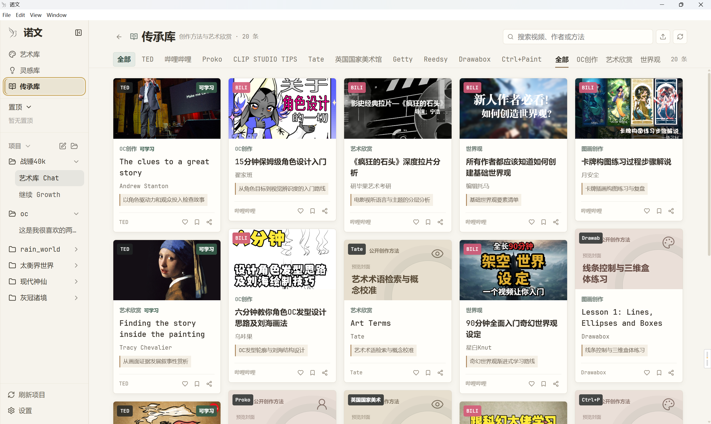
从视频到世界观、角色、故事与图像
从内容到创作
视频、作者与创作方法被整理成可调用的来源，让打动你的内容真正进入创作。

主题、情绪与意象不再散落在信息流里，它们被整理成可以选择、组合和继续发展的灵感。
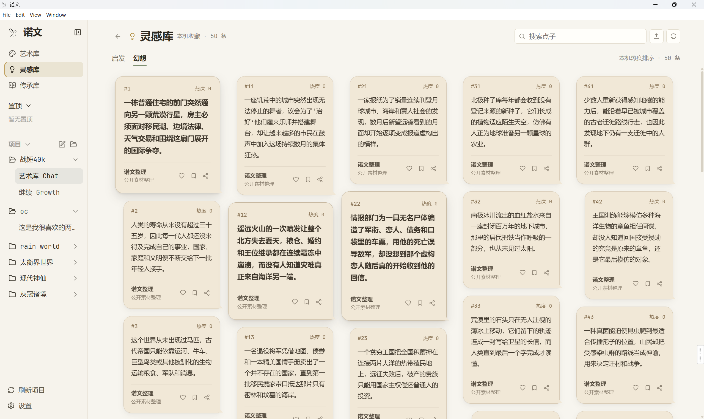
从世界结构到文章与配图，多步任务持续推进，所有结果进入同一个真实项目。
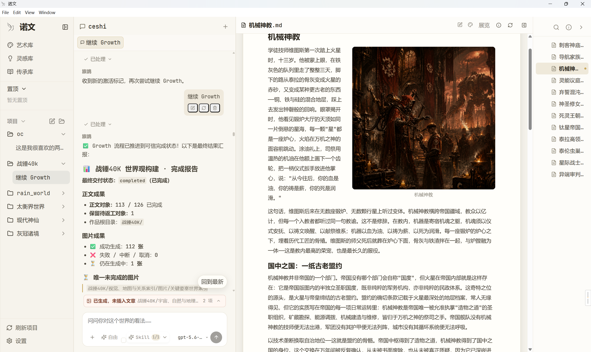
生成的作品成为可回看、可修改、可扩写的个人艺术档案，而不是一次性回答。
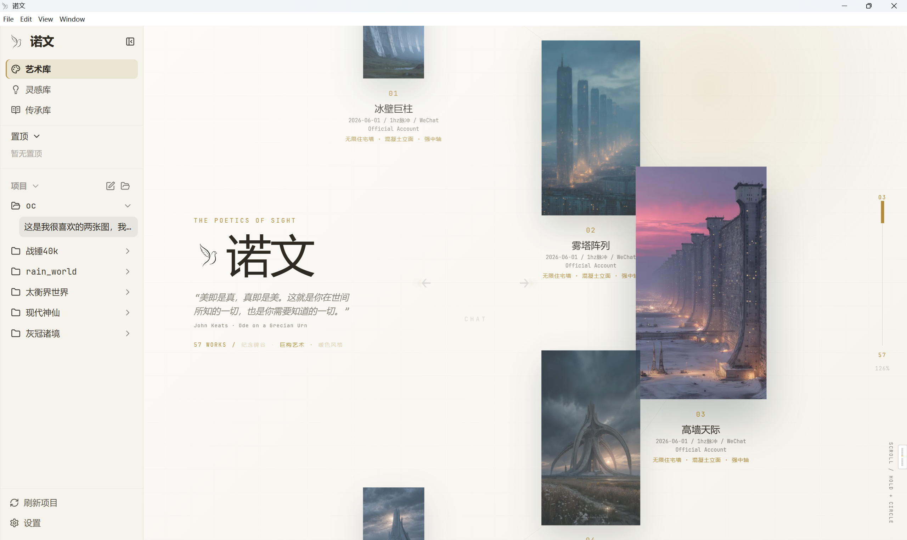
视频种子 · 科幻概念解说 /growth 以这条视频为种子，创作一个硬科幻世界。
构建世界
地理、国家、组织与规则，在世界档案中彼此关联。
进入叙事
选择一条具体会话，让人物行动与故事变化持续推进。
补全枝叶
在另一条创作会话中，继续补充支线、历史与设定。
落笔开篇
通过下方对话框，从已有世界开启一段新的故事。
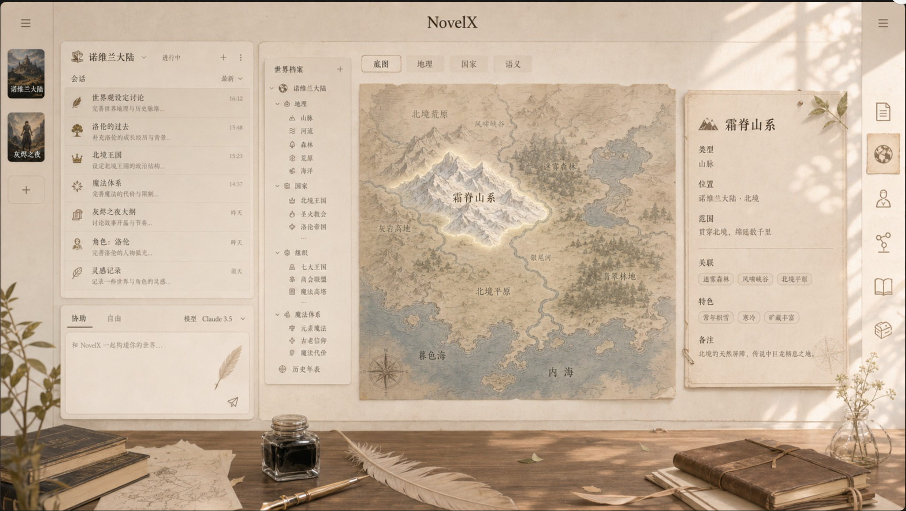
World atlas
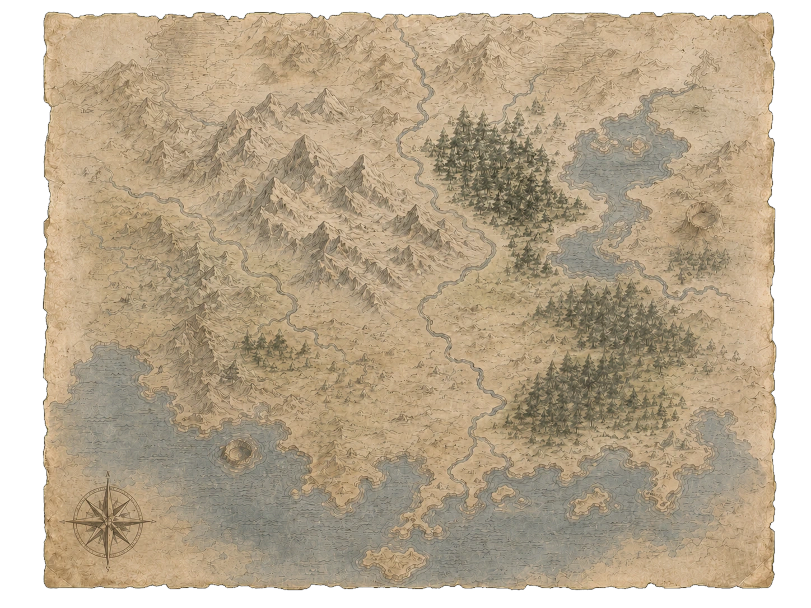
每一处地理，都能成为故事的起点。
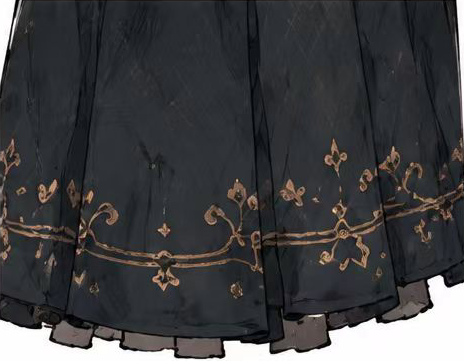
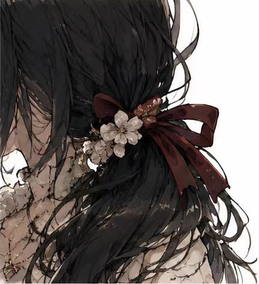
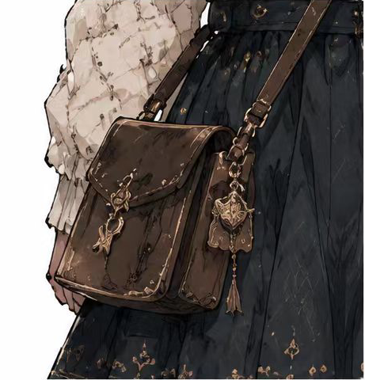
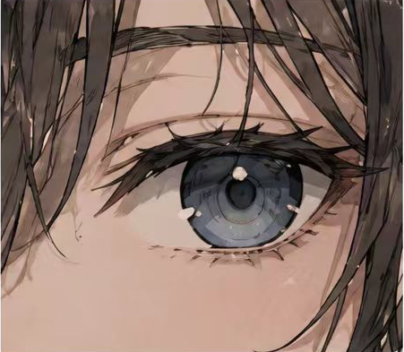
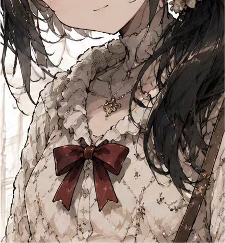
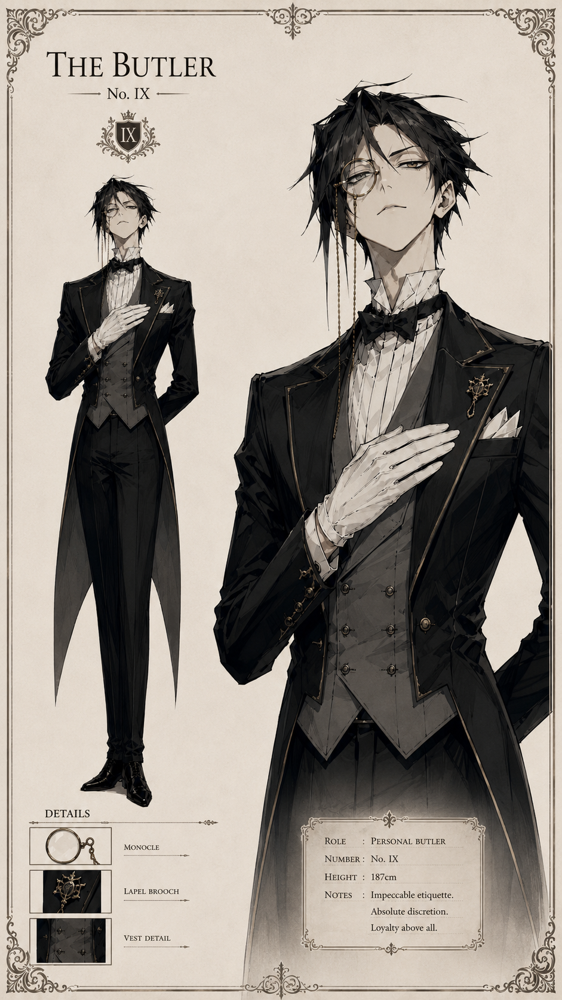
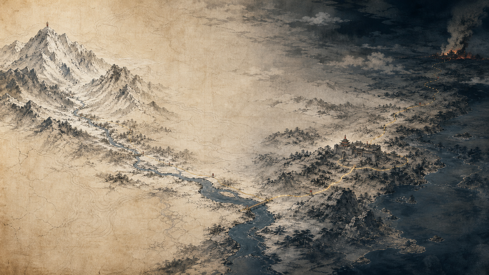
Original character archive
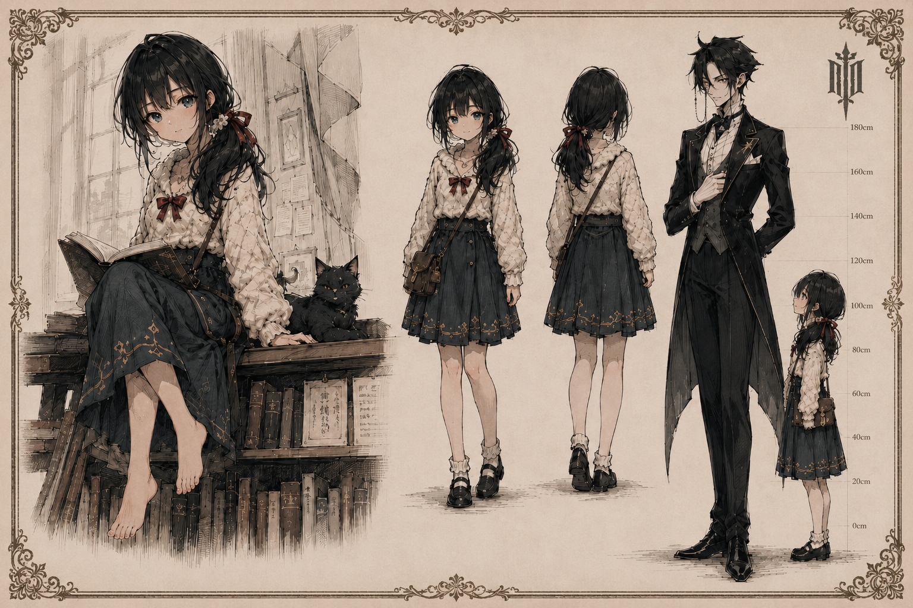
One character. A living relationship. An unfolding world.
World causality archive
选择一个节点，查看它如何影响世界。